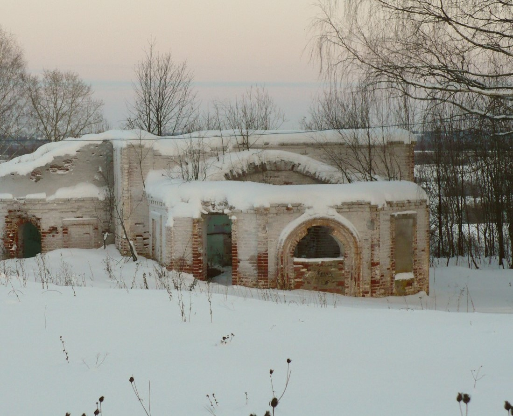

ЗАБРОШЕННЫЕ ХРАМЫ ПРИВОДИНА И ЕГО ОКРЕСТНОСТЕЙ
Тему работы я выбрала не случайно. Дело в
том, что в 2005 году впервые отмечался День
народного единства. Более того, этот
праздник совпал с ещё одним знаменательным
днём - праздником иконы Казанской Божьей
Матери.
